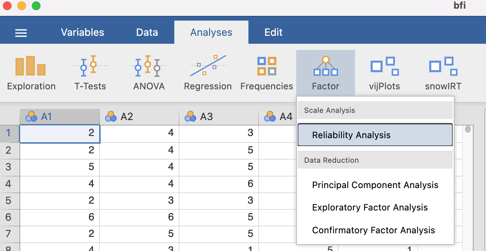
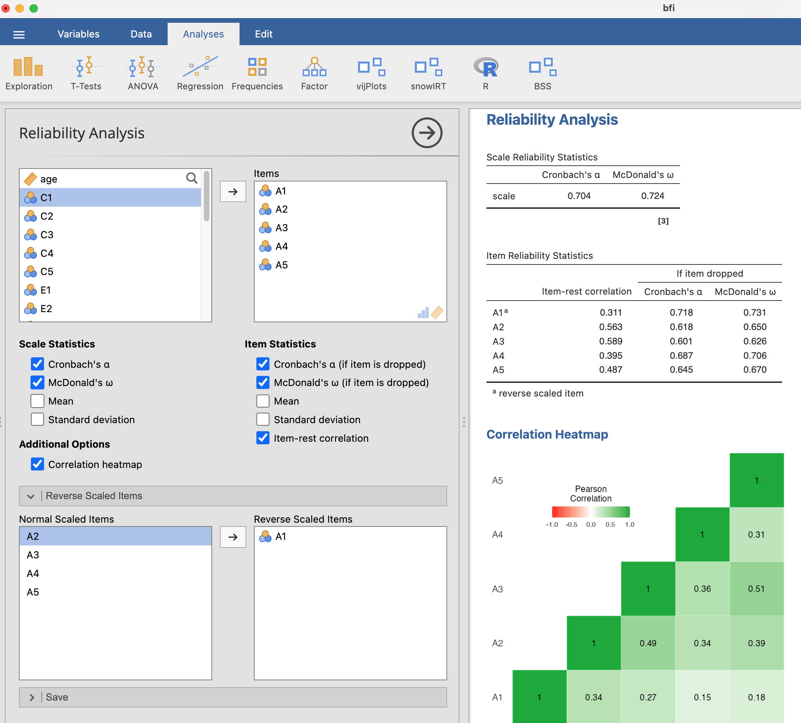
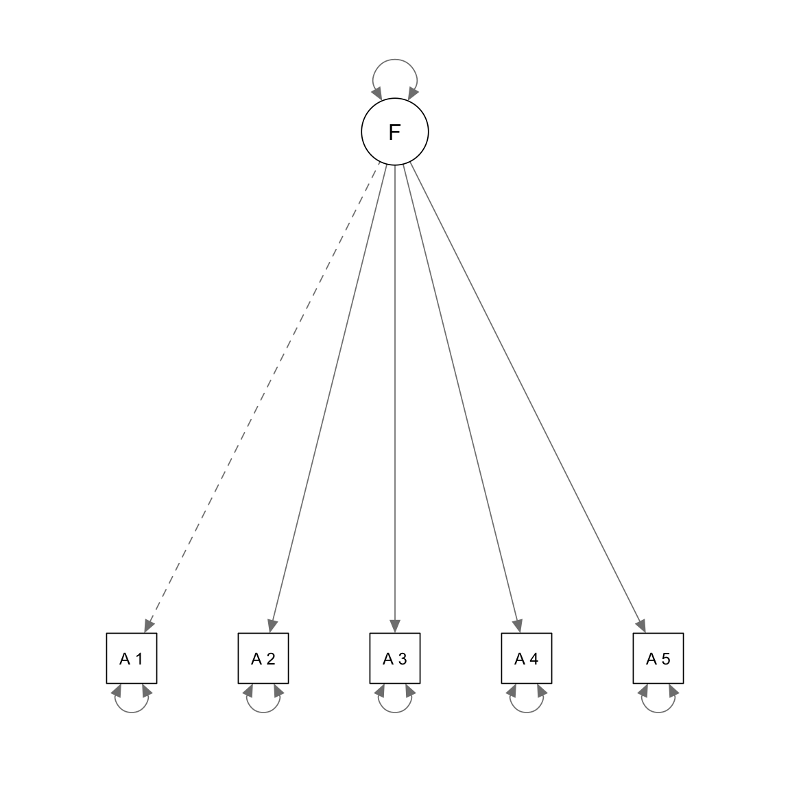

In this handout, we will discuss how to assess the psychometric properties of survey items and scales in R. We will cover reliability analysis, item analysis, and factor analysis.
We will use the bfi dataset from here, which contains item responses to Big Five personality items on a 1-6 Likert scale to show how to compute reliability in R. The dataset has 25 items, with 5 items for each of the Big Five traits: Extraversion (E), Agreeableness (A), Conscientiousness (C), Neuroticism (N), and Openness (O). To keep the example focused, we will analyze the 5 Agreeableness items (A1 to A5): A1 Am indifferent to the feelings of others. (q_146)
A2 Inquire about others’ well-being. (q_1162) A3 Know how to comfort others. (q_1206) A4 Love children. (q_1364) A5 Make people feel at ease. (q_1419)
# Responses are on a 1-6 scale, so reverse-score with 7 - xA_keyed <- A_complete |> dplyr::mutate(A1 =7- A1)head(A_keyed)
Item Analysis
Reliability analysis allows one to check if the test produces consistent scores but it does not provide any insights into the quality of individual items.
Item analysis lets us investigate the quality of these individual items, including in terms of how well they contribute to the whole and improve the validity of our measurement.
Item Discrimination
In general, one would expect that respondents with a high level of knowledge or skill would be more likely to answer an achievement or aptitude item correctly than those with lower levels of knowledge, and vice versa.
Similarly, in noncognitive tests, respondents with a high level of construct would be more likely to agree or disagree a certain statement.
Item discrimination refers to how well an item differentiates between respondents with different levels of the underlying construct.
Item-total correlation: correlation between an item and the total score including that item.
Adjusted item-total correlation (also called corrected item-total or item-remainder): correlation between an item and total score excluding that item.
The adjusted version is preferred because it avoids part-whole inflation. We can use the psych package’s alpha() function to compute these statistics.
raw.r: The correlation of each item with the total score, not corrected for item overlap.
std.r: The correlation of each item with the total score (not corrected for item overlap) if the items were all standardized
r.cor: Item whole correlation corrected for item overlap and scale reliability
r.drop: Item whole correlation for this item against the scale without this item
mean: for data matrices, the mean of each item
sd: For data matrices, the standard deviation of each item
In applied work, adjusted item-total correlations around .30 or higher are often considered minimally acceptable for early scale development, with higher values indicating stronger discrimination.
Reliability Change If Item Deleted
This analysis asks whether the scale would become more or less reliable if an item were removed. If reliability increases after deleting an item, that item may be weakly aligned with the rest of the scale and could be a candidate for removal.
If reliability increases after deleting an item, that item may be weakly aligned with the rest of the scale and could be a candidate for removal.
In Jamovi, Analyses -> Factor -> Reliabilty Analysis


Factor Analysis
The purpose of factor analytic techniques is to help us understand the number and nature of the dimensions, or factors, underlying a set of variables. In factor analysis, the word ‘factor’ is usually used instead of the word ‘construct’, and we shall follow this convention from now on.
Factor analytic studies address questions such as:
How many factors are there?
What do these factors represent?
If researchers do not know the number of factors measured by the test or the structure of the test, they should use EFA to explore the underlying structure. On the other hand, if researchers hypothesize a particular number of factors that represent distinct aspects of a construct, based on theory or prior research, and write items to measure each factor, they may consider using CFA to confirm whether the data support their hypothesized structure.
Factor analytic methods answer the question, “Why are these variables correlated in the way we observe?” In factor analysis, the answer to this question is that the variables are correlated through a common cause: the factor(s).
In what follows, we will analyze the items using CFA:
Model specification
The Agreeableness Scale implies a single-factor model. Below we will assess if a single-factor model is appropriate by using CFA based on the data we have. The single-factor model can be represented using the following diagram:

There are several R packages for CFA, and we will use lavaan in this class. To specify the single-factor model above for lavaan, we can define the model using the following code:
F represents the factor
=~ symbol connects the factor (on the left side) and all items associated with it (on the right side)
The following R code fits the single-factor model to the data:
fit <- lavaan::cfa(model, estimator ="MLR", data = A_keyed)
Parameter estimation
In the above CFA model, we need to estimate 10 loadings and 10 error variances, so there are 20 parameters that need to be estimated. The following code will print their estimates:
lavaan::standardizedSolution(fit)
To understand the table above, keep in mind that:
Standardized loading estimates can be found in column “est.std” for all items in rows with F =~ itemX
\(\text{standardized loading}^2\) represents the proportion of variance of item scores explained by the factor
Measurement error variances or residual variances for each item can be found in rows with itemX ~~ itemX